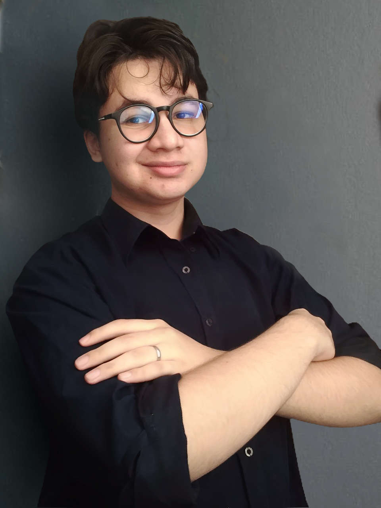

MINHAS ESPECIALIDADES.
Web site
Desenvolvimento básico de sites com HTML e CSS. Criação de layouts e responsividade para plataformas.
Design
Criação de imagens com GIMP, CorelDRAW e Photoshop. Edição e manipulação de fotos básicos.
Manutenção de pc
Concerto de computadores. Manutenção, diagnóstico, e reparo de hardware e software para computadores.

Muito prazer sou José Miguel
Sou um jovem programador de 19 anos, formado como Técnico em Informática. Durante minha formação, adquiri conhecimentos em diversas áreas da tecnologia da informação, incluindo programação, redes de computadores, banco de dados e manutenção de hardware.
Possuo experiência de 6 meses como designer gráfico, o que contribuiu para o meu desenvolvimento em criação de identidade visual, layout e personalização de projetos.